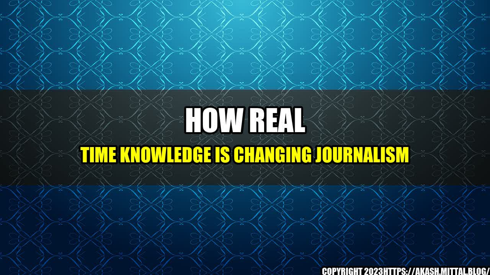

How Real Time Knowledge is Changing Journalism
As a journalist, I've witnessed the power of real-time knowledge in shaping the narrative of a story. One particular incident that comes to mind is when I was covering a protest rally in the city center. The rally was initially peaceful, but suddenly erupted into violence when a group of agitators started throwing stones at the police. In the midst of the chaos, it became difficult to get an accurate account of what was happening.
That's when I decided to leverage the power of real-time knowledge to get a better understanding of the situation. I turned to my trusted chatbot, which was integrated with Bing search data, to get the latest updates about the rally. The chatbot helped me quickly get information about the number of protesters, the extent of the damage, and the police response. With the help of this real-time knowledge, I was able to provide my news organization with accurate and timely updates, and help shape the narrative of the story as it unfolded.
This experience made me realize that real-time knowledge is revolutionizing the world of journalism and changing the way we report and analyze news stories. Here are three key ways that real-time knowledge is changing journalism for the better:
- Breaking News: Real-time knowledge is helping journalists break news faster than ever before. With tools like chatbots and machine learning algorithms, it's easier to parse through vast amounts of data and weed out the noise to get to the core of the story. This helps journalists get a head start in breaking news and gives them a competitive edge over other news organizations.
- Data Visualization: Real-time knowledge is also helping journalists create engaging and dynamic data visualizations that can help tell a story. With real-time data, it's possible to create interactive maps, graphs, and charts that can help audiences understand complex issues in a more digestible way. This, in turn, helps journalists create more compelling stories that resonate with audiences.
- Fact-Checking: Real-time knowledge is also helping journalists fact-check stories in real-time. With chatbots and machine learning algorithms, it's easier to quickly verify the accuracy of information and weed out fake news and rumors. This helps journalists maintain their credibility and ensure that the stories they report are accurate and reliable.
Real-time knowledge is a game-changer for the world of journalism, and it's only going to become more important in the years to come. By embracing this technology and using it to our advantage, we can create better, more compelling stories that resonate with audiences and help shape the world around us.
Examples of Real-Time Knowledge in Journalism
Here are some examples of how news organizations are using real-time knowledge to improve their reporting:
- The New York Times uses artificial intelligence (AI) to scan social media and other sources for breaking news. The AI can quickly identify newsworthy events and alert reporters to cover them.
- BBC News uses chatbots to answer audience questions about breaking news. This helps to provide accurate information to the public in a timely manner.
- CNN uses data visualization tools to create interactive maps and charts that help audiences understand complex issues. This improves engagement and helps to tell more compelling stories.
- The Washington Post uses machine learning algorithms to fact-check politicians' speeches in real-time. This helps to hold politicians accountable and ensures that the news organization is providing accurate information to its readers.
Conclusion
Real-time knowledge is changing the face of journalism, and it's clear that the trend is here to stay. By leveraging the power of chatbots, AI, and machine learning, journalists can get ahead of the curve in breaking news, creating compelling stories, and fact-checking their reporting. As we move forward, it's important for news organizations to continue embracing these new technologies and using them to their advantage.
In conclusion, real-time knowledge is a game-changer for the world of journalism, and it's only going to become more important in the years to come. By continuing to innovate and experiment with these tools, news organizations can create better, more compelling stories that help to shape the world around us.
Curated by Team Akash.Mittal.Blog
Share on Twitter Share on LinkedIn